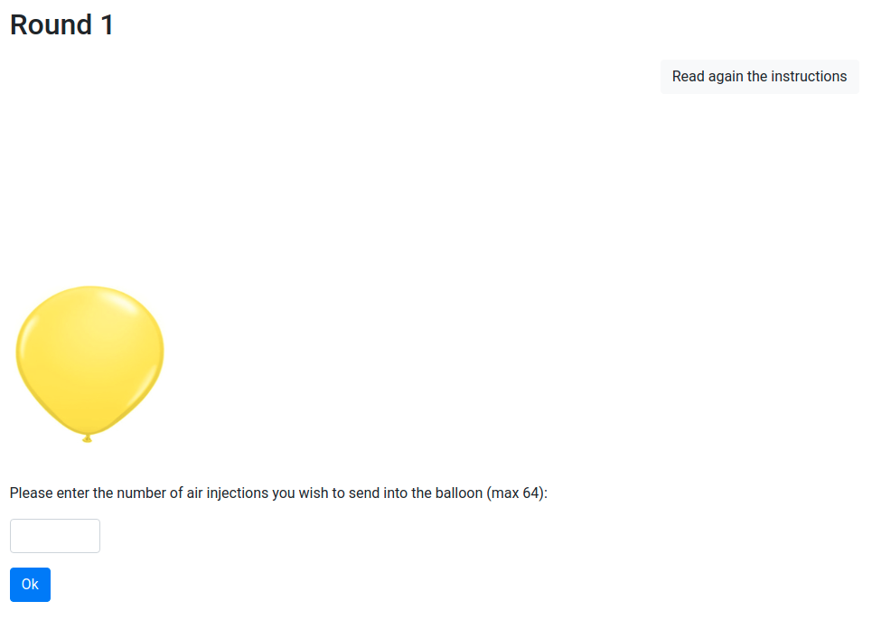
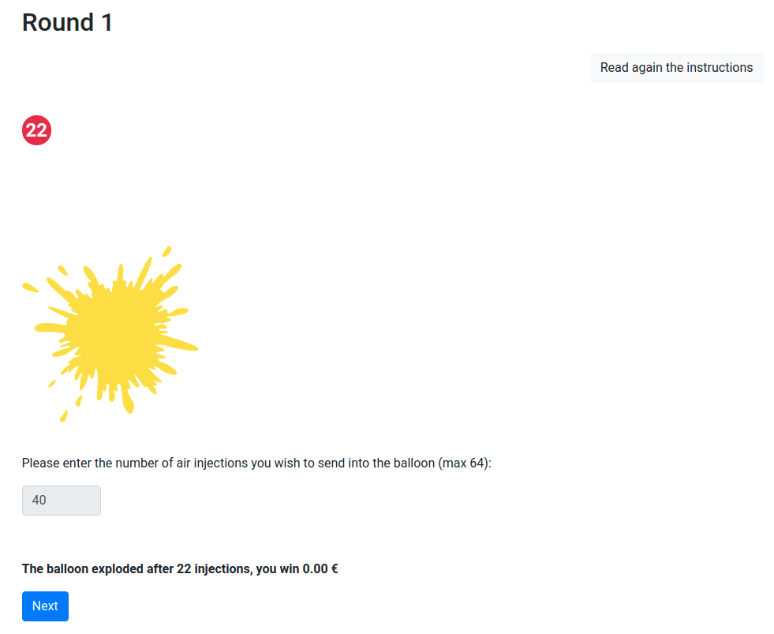
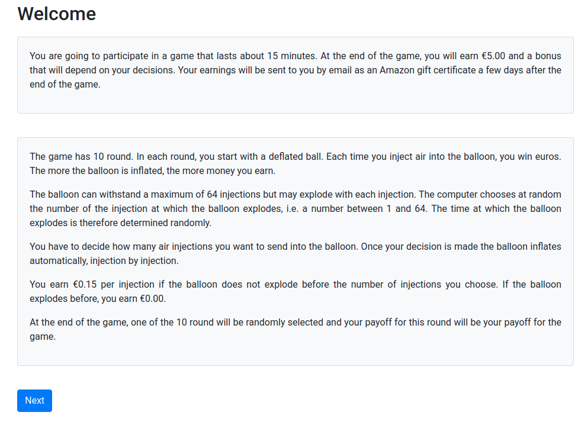
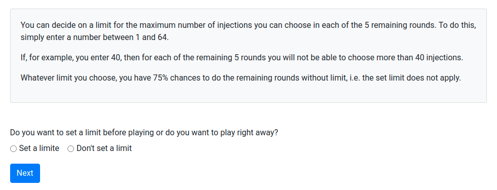

Draft for Thesis
Abstract
English version
Version Française
Introduction
1
Intra-personal conflict and self-commitment
1.1
Introduction
1.2
Experimental Design and Procedure
1.2.1
Experimental conditions
1.2.2
Participants
1.2.3
Control questions
1.2.4
Procedure
1.3
Results
1.4
Conclusion
2
Descriptive Power of Tempting Model
2.1
Introduction
2.2
Materials and methods
2.2.1
Experimental design
2.2.2
Estimations and Models
2.3
Results
2.4
Discussion
3
Repeated Choice
3.1
Introduction
3.2
Experimental design
3.3
Results
3.4
Conclusion
Conclusion
Appendix
A
Experimental instruction for chapter 2
B
Experimental instruction for chapter 3
C
Experimental instruction for chapter 4
References
Published with bookdown
Two Different Experimental Approches For Testing Temptation And A Test Of Stability Of Individual Risk Preferences
A
Experimental instruction for chapter 2



